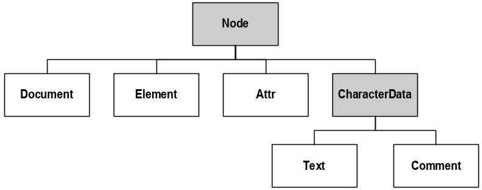
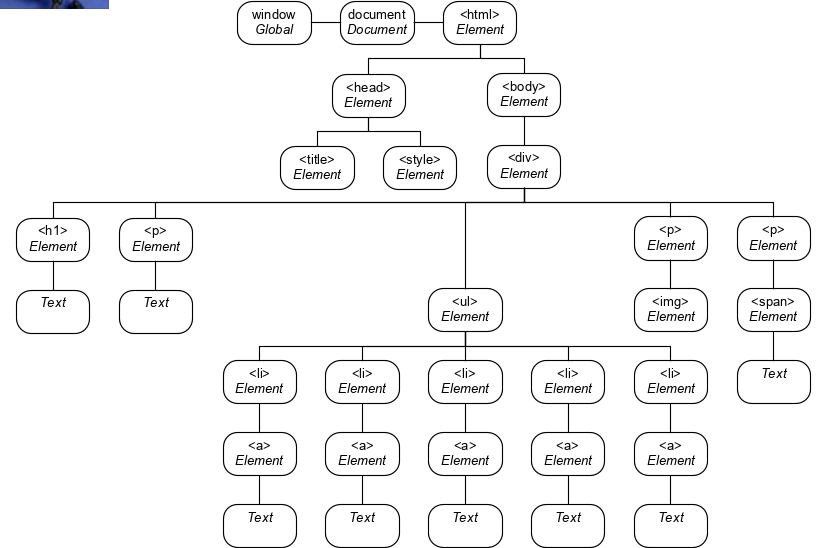

Web Development 3
Table of Contents
1 Rich Internet Applications (RIAs)
- Rich Internet Applications (RIAs) are being developed using technologies (such as Ajax) that have the look and feel of desktop software.
- Typically run on the web browser and do not require additional software
- Transfer the processing necessary for the UI to the client
- General benefits:
- Richer
- Responsive
- Client/Server balance
- Asynchronous Communication
- Network Efficiency
- Term RIA was introduced by Macromedia
- Is now widely used
- AJAX (Asynchronous JavaScript and XML): Allows partial page updates – meaning updates of individual pieces of a web page without having to reload the entire page. Technologies include (XHTML, CSS, JavaScript, the DOM, XML, and XMLHttpRequest object).
- XMLHttpRequest
- Fetch API (Promises)
- XML/JSON
- Serve Side
- Valid Markup
- CSS
- DOM Scripting
1.1 History of the Internet
- Late 1960’s , ARPA (Advanced Research Projects Agency) of the U.S Department of Defense implemented a network of computer systems (ARPANET) of about a dozen ARPA funded universities and research institutions.
- ARPA developed the TCP and IP protocols and the ARPANET evolved into today’s Internet
- In 1989, Tim Berners-Lee of CERN ( the European Organization for nuclear Research) began to develop a technology for sharing information via hyperlinked text documents. This was called HTML. He also wrote the Hypertext Transfer Protocol (HTTP).
- Web use exploded with the availability in 1993 of the Mosaic browser. The team that developed Mosaic, went on to found Netscape.
- In October 1994, Tim Berners-Lee founded an organization – called the World Wide Web consortium (W3C)
- Web technologies standardised by the W3C are called Recommendations. Recommendations include:
- XHTML
- CSS
- HTML
- XML
- HTML5
1.2 Architecture of a Web Application
/screenshot_2018-12-09_13-41-48.png)
1.3 Architecture of the Internet
/screenshot_2018-12-09_13-42-24.png)
1.4 Processing a Static Web Page
/screenshot_2018-12-09_13-43-01.png)
1.5 Processing a Dynamic Page
/screenshot_2018-12-09_13-48-59.png)
1.6 Request/Response Example
Request
- Request line
- Headers
- Empty line
- Optional body
- Methods:
- HEAD (safe)
- GET (safe)
- POST
- PUT
- DELETE
- TRACE (safe)
- OPTIONS (safe)
- CONNECT
- Example GET
GET / HTTP/1.1
Host: www.example.com
Response
HTTP/1.1 200 OK
Content-Type: text/html
Content-Length: 136
Server: Apache/2.2.3
<html>
.
.
.
</html>
Status Codes
- Success: 2xx
- Redirection: 3xx
- Client-Side Error: 4xx
- Server-Side Error: 5xx
Session Options
- Cookies
- Sessions
- Hidden variables
- URL encoded params
1.7 What is Web 2.0?
- Web1.0 was mainly focused on static content based websites with advertisement
- The term Web 2.0 was coined by Dale Dougherty of O’ Reilly Media in 2003 to describe this trend
- Companies use the web as a platform to create community based sites (social networks, blog, wikis, etc.)
- Is characterized by participation
- Some websites are built nearly entirely on user-generated content
- Web services allow to incorporate functionality in own applications, e.g. Amazon Web Services
1.8 Client/Server Roles
Web 1.0
- Information stored as static pages on the server
- Client requests pages from the server and displays them
- User Interaction based on hyperlinks
Web 2.0
- Data and Business logic on server
- Dynamic pages created on server in response to client requests. All processing on server.
- Data merged into page templates and sent to client for display
- User Interaction based on hyperlinks and form input
- Application sent from server to client as web page with embedded code
- Application running on client provides user with interactive interface
- Data and business logic on server
- Data sent by server in response to client requests
- Client uses data to update interface. Processing now on client side and on server.
- User interaction based on hyperlinks, form input, GUI controls
2 PHP
2.1 Data Types
- Integer
- Double
- Boolean
- String
- Can be
null
- Can be
- Array
- Object
2.2 Common Methods
number_format($number, $decimals): format a numberisset($var): true if the$varhas been setempty($var): true if$varis emptyis_numeric($var): true if the$varis numericinclude($path): Insert and run the specified file. Continues operation in case of a failure.include_once($path): Same asincludebut makes sure the file is only included oncerequire($path): Same asincludebut causes a critical error and the execution stopsrequire_once($path): Same as theinclude_once, but with critical errorexit([$status]): Exits the PHP script. If$statusis not supplied, the brackets are optional. If$statusis supplied, then the function sends the status to the browser before exiting.die([$status]): Same asexitdefine('MAX_QTY', 100): Defines a constantMAX_QTYwith a value of 100date($format): Get the current date, e.g.date('Y-m-d')=> 2010-06-12array(): Create an arraycount($array_name): Count the elements in the array
2.3 Processing Form Data
- With a form that has two inputs:
first_nameandlast_name
With GET
- The URL generated would be:
http://localhost/display.php?first_name=Joe&last_name=Bloggs - Generally used to retrieve data
- Retrieve it in PHP with
$first_name = $_GET['first_name']; $last_name = $_GET['last_name'];
With POST
- Generally used to create or to modify data
- Also is more secure than GET (does not display the data in the URL)
- Retrieve it in PHP with
$first_name = $_POST['first_name']; $last_name = $_POST['last_name'];
Accessing Form Data
- Use
isset($_POST['checkbox'])to check checkboxes and radio buttons - Can use
<input type="checkbox" name="top[]" value="pep">to put all checkboxes into atoparray. So now$toppings = $_POST['top']contains a numbered array
2.4 Connecting to MySQL
- Create the connection
$dsn = 'mysql:host=localhost;dbname=my_db'; $username = 'username'; $password = 'password'; try { $db = new PDO($dsn, $username, $password); } catch (PDOException $e) { $e_msg = $e->getMessage(); echo "Error $e_msg"; }
- Sample query
$query = 'SELECT * FROM Users WHERE id = 1'; $users = $db->query($query); $user = $users->fetch(PDO::FETCH_ASSOC); $user = $users->fetchAll(PDO::FETCH_ASSOC); // to get all rows $name = $user['first_name'];
- For modifying use
$db->exec($query) - For grabbing the last id
$users = $db->exec($query); $user->id = $db->lastInsertId();
2.5 Arrays
key(): Get the key from the internal array pointercurrent(): Get the value from the internal array pointerend(), reset(), next(), prev(): Move the internal pointerarray_values(): Returns an array containing all the values of the arrayrange(min, max): Create an array frommintomaxarray_fill(from_idx, to_idx, fill_with): Fill the arrayarray_pad(array, size, value): Inputarray, thesizeto display, whatvalueto add beyond originalarrayarray_merge(array1, array2): Return the two merged arraysimplode(string, array): LikeArray.join()in most other languagesarray_slice(array, from): Slice the array from indexfrom(inclusive)array_sum(array): Add all values togetherin_array(value, array): Check ifvalueinarrayarray_key_exists(key, array): Check ifkeyinarrayarray_count_values(array): Gives back an associative array of values that are counted multiple timessort(array)sort(array, SORT_NUMERIC)rsort(array): Reverse sortrsort(array, SORT_NUMERIC)asort(array): Associative array sorts by value, revers isarsortksort(array): Associative array sorts by key, reverse iskrsort- JS like functions:
array_push($array, $value): Add at the endarray_pop($array): Take from the end and returnarray_unshift($array, $value): Add at the beginningarray_shift($array): Take from the beginning and return
- Standard for loop
for ($i = 0; $i < count($rates); $i++) { echo $rates[$i]; }
- For each loop
foreach ($rates as $rate) { echo $rate; }
- String indexes
$rates['One'] = 5.95; $rates['Two'] = 5; $rates['Three'] = 6.95; foreach ($rates as $key=>$value) { echo $key . '=' . $value; }
- Add a value to the end of an array
$letters = array('a', 'b'); $letters[] = 'c';
- Remove value
$letters = array('a', 'b'); unset($letters[1]); // idx 1 is not NULL unset($letters); // the whole array is now NULL $letters = array_values($letters); // reindex (removes NULL values)
- Make an associative array
$tax_rates = array('NC' => 7.75, 'CA' => 8.0); // or $tax_rates = array(); $tax_rates['NC'] = 7.75; $tax_rates['CA'] = 8.0;
2.6 Slim
- Set a route path
$app->get('/users/:id', 'getUser'); $app->post('/users', 'createUser'); $app->put('/users/:id', 'updateUser'); $app->delete('/users/:id', 'deleteUser');
- Get request body
global $app; $request = $app->request(); $user = json_decode($request->getBody()); $name = $user->name; $address = $user->address;
- Response as JSON
global $db; $users = $db->query($query); $users = $users->fetchAll(PDO::FETCH_ASSOC); header("Content-Type: application/json", true); echo '{"users": ' . json_encode($users) . '}';
3 Rest
- Use HTTP Methods and Response Codes
- Be Stateless and Cache-able
- Use Addressable Resources
- Support the transfer of Representations
4 Web Services
- Are software systems that are often designed to support machine-to-machine interaction over a network
- Web Services are often, simply just APIs
- Use XML or JSON
- Style is: RPC, SOAP or REST
5 DOM
5.1 DOM Tree Example
- Node Types

- Simple Diagram

- With Attributes

5.2 Common Properties Of The Node Interface
- nodeType
- nodeName
- nodeValue
- attributes
- parentNode
- childNodes
- firstChild
- lastChild
5.3 nodeType
- 1: Element
- 2: Attr
- 3: Text
- 8: Comment
- 9: Document
5.4 Handy Methods
hasChildNodes()hasAttributes()hasAttribute()getAttribute()setAttribute()removeAttribute()getElementsByTagName()getElementsByName()
5.5 DOM Creation Methods
createElement()createTextNode()appendChild()removeChild()setAttribute()insertBefore()
5.6 HTMLElement interface
Built-im attribute references
idtitlehref(only on an anchor)src(only on an image)
Default actions
a: Load page in thehrefattributeinput: Submit the form if thetypeattr is set tosubmitinput: Reset the form if thetypeattr is set toresetbutton: Submit the form if thetypeattr is set tosubmitbutton: Reset the form if thetypeattr is set toresetreturn false;cancels the default action
6 AJAX
- AJAX (Asynchronous JavaScript and XML): Allows partial page updates – meaning updates of individual pieces of a web page without having to reload the entire page. Technologies include (XHTML, CSS, JavaScript, the DOM, XML, and XMLHttpRequest object).
- Components:
- XMLHttpRequest
- Fetch API (Promises)
- XML/JSON
- Serve Side
- Valid Markup
- CSS
- DOM Scripting
6.1 Using XMLHttpRequest
readyStatevalues- 0 uninitialized
- 1 loading
- 2 loaded
- 3 interactive
- 4 complete
- Create the object
var request = new XMLHttpRequest();
- Attach a listener to the state change
request.onreadystatechange = function() { // do something };
- Send data
// for get request.open("GET", "url", true); // the boolean true indicates "exute in async" request.send(null); // for post request.open("POST", "url", true); // the boolean true indicates "exute in async" request.setRequestHeader("Content-type", "application/x-www-form-urlencoded"); request.send("name=joe+bloggs&message=Hello+Everybody");
- Get data back (check for state 4)
request.onreadystatechange = function() { if (request.readyState == 4) { // request.responseText for HTML and JSON // request.responseXML for XML } };
7 JavaScript
7.1 Execution
- First pass:
- Declares and initializes function arguments
- Declares the local variables, including anonymous functions assigned to a local variable, but doesn't initialize them
- Declares and initializes functions
- Second pass:
- Execute code
8 jQuery
- Usually the starting point is:
$(document).ready(function() { // do something here });
8.1 Selectors
- All
pdescendants of#faqs,$("#faqs p") - Direct children :
$("#faqs > p") - Adjacent siblings:
$("#faqs + p") - General siblings:
$("#faqs ~ p") - Multiple selectors with a comma :
$("#faqs , p") - CSS pseudo like classes:
$("#faqs li:first")$("#faqs li:last")$("#faqs li:odd")$("#faqs li:even")
8.2 AJAX
$.ajax({ type: 'GET', url: "url", dataType: "json", success: function(data) { // do something with "data" } });